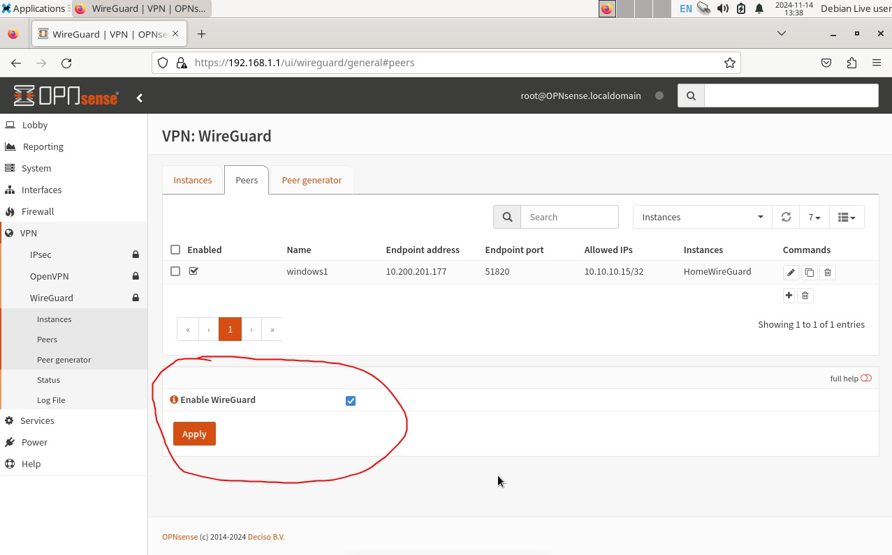
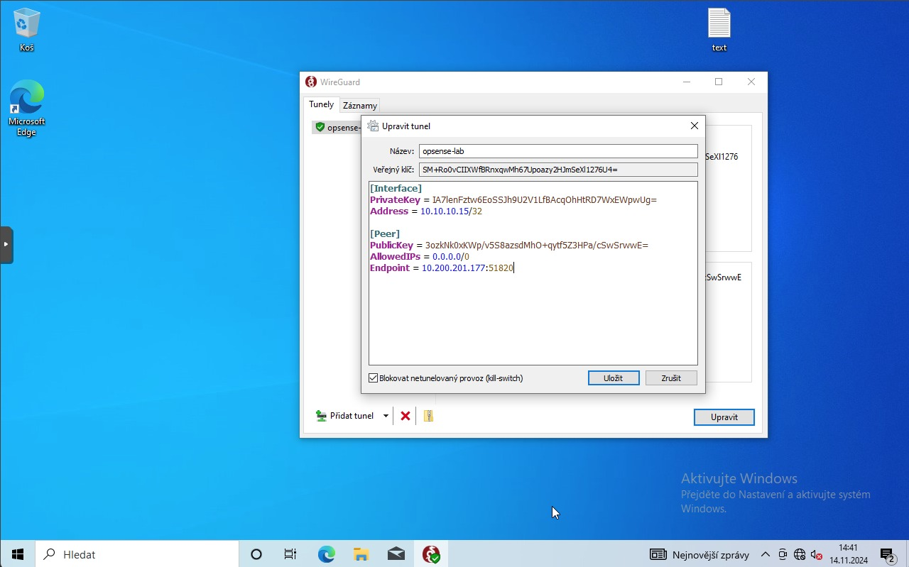
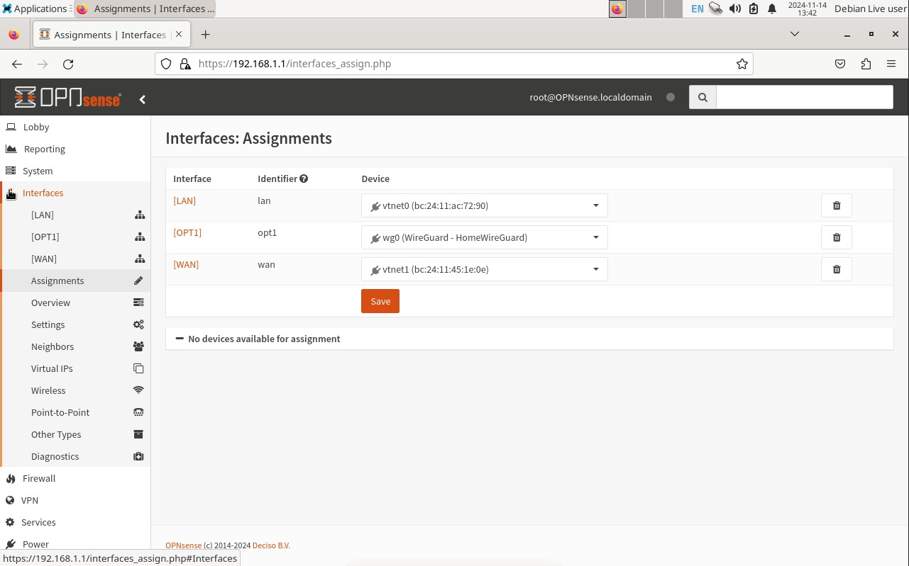

Nastavení WireGuard
Vše, co není zmíněno v tabulkách (konfiguraci), je defaultně nastavené a nemění se nastavení u toho.
Instance
VPN → WireGuard → Instances
| Parameter | Value |
|---|---|
| Enabled | Zaškrtnuto |
| Name | To je na vás |
| Public key | Nechat vygenerovat, poté použijeme při nastavování klienta |
| Listen port | 51820 (defaultní port) |
| Tunnel address | 10.10.10.1/24 (ta byla z tutoriálu xD) |
| Peers | (Peer bude teprve vytvořen) |
Peer
VPN → WireGuard → Peers
| Parameter | Value |
|---|---|
| Enabled | Zaškrtnuto |
| Name | To je na vás |
| Public key | Sem vložit Public key klienta |
| Allowed IPs | 10.10.10.15/32 (musí být jako v Instanci Tunnel address, ale né stejná IP) |
| Endpoint address | WAN interface adresa OPNSense |
| Endpoint port | 51820 |
| Instances | Jméno instance, kterou máme vytvořenou |
Po dokončení všech nastavení nezapomenout dole Enable WireGuard a Apply.
Nastavení klienta
Klienta jsem nastavoval ve Windows (neumím s konzolí v Linuxu LMAO). Při vytvoření nového prázdného tunelu se vygeneruje private/public key, public key vložit do Peer na OPNSense WireGuardu.
Konfigurace klienta
[Interface] PrivateKey = váš vygenerovaný Address = 10.10.10.15/32 (stejná adresa z Peer) [Peer] PublicKey = vygenerovaný v Instance AllowedIPs = 0.0.0.0/0 Endpoint = vaše WAN adresa interfacu na OPNSense
Nastavení OPNSense Firewall
Interfaces
Interfaces → Assignments
Přidat wireguard interface do interfaců a uložit. Poté se na levé liště objeví náš interface.
Váš interface na WireGuard
| Parameter | Value |
|---|---|
| Enable | Zaškrtnuto |
| Lock | Zaškrtnuto |
| Description | To je na vás, je to pro lepší identifikaci |
Pravidla ve Firewallu
Firewall → Rules → Název našeho interfacu
Přidáme nové pravidlo.